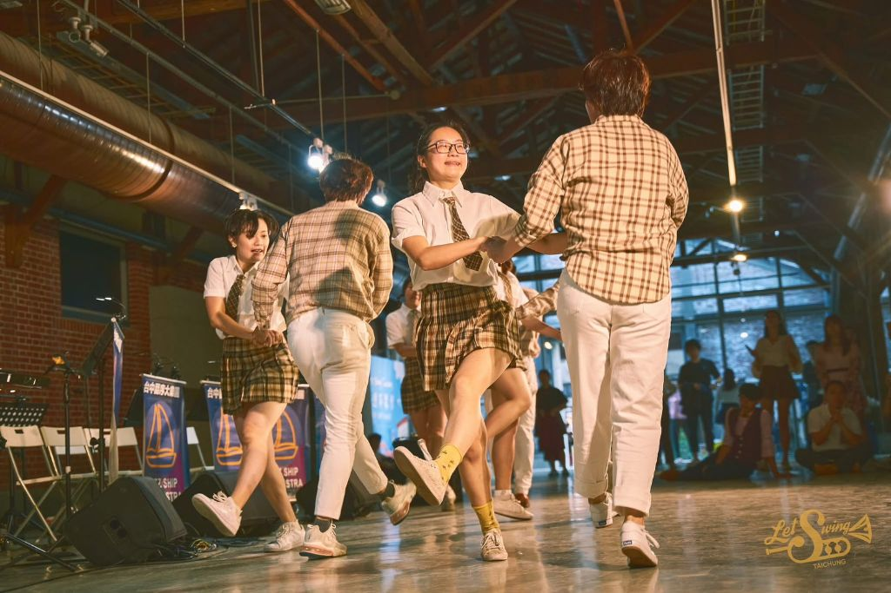
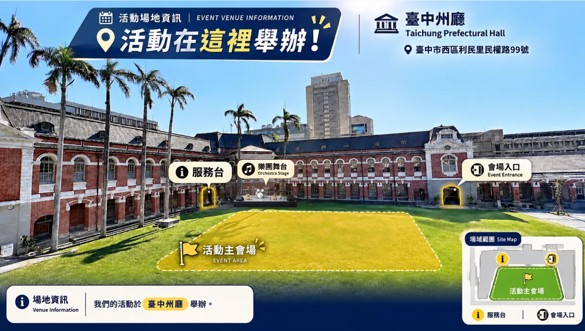

關於 MileSpace
Produced by · 企劃執行單位
讓音樂回到城市，
也回到生活裡。
我們相信爵士不只發生在舞台上，更應融入日常的每一個時刻。
從一杯飲品、一段旋律，到老建築裡的相遇——MileSpace 持續以現場音樂、空間策展與城市文化為核心，點亮地方的生命力。
把百年古蹟，
變成城市的客廳。
延續這座城市獨有的爵士熱情，本次活動將樂章帶進重新啟用的百年臺中州廳。褪去昔日官署的嚴肅感，仿巴洛克建築躍身為最美的戶外背景。帶上野餐墊、席地而坐，讓午後的爵士律動與冬日暖陽交織，邀請您走進這座充滿溫度的「城市客廳」，感受歷史與現代交融的全新風華。
紅磚拱廊、棕櫚樹影，
一張野餐墊，一個爵士午後。

Let's Swing Taichung 台中搖擺舞教室創立於 2020 年，積極在台中地區推廣搖擺舞，目前是中台灣最大的搖擺舞組織。
搖擺舞（Swing Dance）源自 1920 年代美國爵士樂的黃金時期，充滿活力、自由與互動感。身穿復古衣著，隨著爵士音樂的節奏，舞者之間用輕快的腳步及律動來交流，無論你是否會跳舞，相信都能感受到搖擺舞帶來的能量、喜悅與感染力！

讓音樂回到城市，
也回到生活裡。
我們相信爵士不只發生在舞台上，更應融入日常的每一個時刻。
從一杯飲品、一段旋律，到老建築裡的相遇——MileSpace 持續以現場音樂、空間策展與城市文化為核心，點亮地方的生命力。